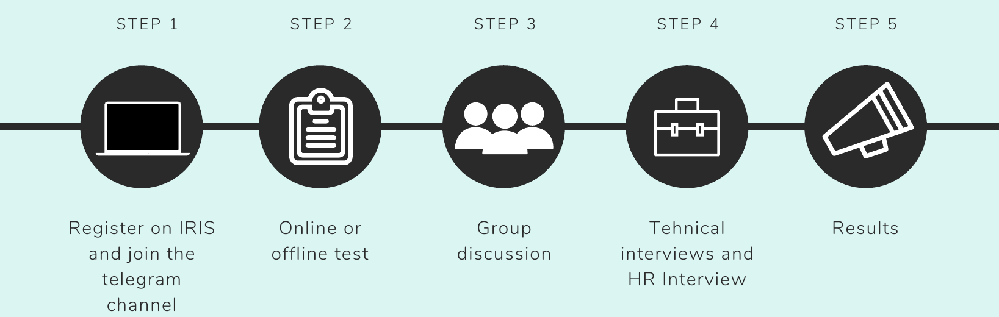

1. The Placement Process
With around 300 companies visiting our campus every year for various profiles, there is no doubt that NITK is itself is a brand and a very important tag with our name. To make this magic happens, the placement team works very hard behind the curtain and for the smooth process. The process for the placement is:-
One thing that is common for all profiles irrespective of the profile is good communication skills which you can’t learn in one night. Having good communication is key to the placement. Refer to the resource section for improving your soft skills.
2. Various Profiles Companies Offer
The different profiles that any company offers at NITK for civil can be classified as :
- 2.1 Coding Profile
- 2.2 Analytics Profile
- 2.3 Teaching Profile
- 2.4 Management Profile
- 2.5 Content and Media profile
2.1 Coding Profile
Most of the companies that are open to civil engineering students and of coding profile offer the role of software developer and the question paper pattern is nearly the same for all companies, check out the resource section for important languages.
Online Test : Questions are asked on Data structures and Algorithm which you can practise on different platforms like HackerEarth, HackerRank, CodeForces, Codechef, Geeks For Geeks (Best). You can learn any major programming language you want, but it is advisable to learn C++/Java from the placement perspective. They will also ask Aptitude questions and sometimes verbal ability also.
Technical Interview : The technical interview is generally based on Data Base Management Systems (DBMS), Data Structure & Algorithm (DSA). Object- Oriented Programming ( OOPS) and Operating System (OS). Again it can vary from profile to profile, some times company expect students that they also know about Machine learning or UI/UX. So, it depends, but questions from OOPS, DSA, DBMS and from OS are from sure. They will also ask some Logical and Reasoning questions. And last but not least, they will ask question-based on your resume (Projects and internships mainly).
HR Interview: Don’t take this interview lightly, many people got rejected after HR and the questions can be prepared earlier so prepare for this round also. “ Why do you want to apply for the software profile instead of a Core profile?” This questions will be asked from you in every interview, prepare well for this and don’t answer like “I don’t like civil”, don’t curse your own branch, it will leave a bad impression, reply with a positive answer. Your answer should be convincing and reasonable. They will also ask questions on “Why Should We Hire You?” “What are the values of this company”. Refer to resources for more details.
2.2 Analytics Profile
We have reached an era where we are generating 2.5 Billion GB data every day. So, it is clear that the companies need someone who can collect, segregate, analyse the data, pinpoint trends and pattern and make reports from it. So, here analyst comes into the picture. The analyst uses different tools and programming languages which some companies expect from the student should know. There are ‘n’ no. of tools and programming languages present on the internet one can use, but most common ones are SQL (Language) and Excel. SQL is Structured Query Language, which is a programming language for storing, manipulating and retrieving data stored in a relational database.SQL is the standard language for Relational Database System. All the Relational Database Management Systems (RDMS) like MySQL, MS Access, Oracle, Sybase, Informix, Postgres and SQL Server use SQL as their standard database language. Knowing the basic of Python OR Data Visualisation using Python will surely give you some edge.
Technical Test : The test for Data Analytics will vary from company to company. But, if you’re an individual who neither likes core nor coding, then prepare well for the following topics, some companies ask questions from all the below topics, some companies will ask from few. 1. Aptitude (Common for all) 2. Logical Reasoning (Common for all) 3. Verbal ability (Common for all) 4. Data Interpretation 5. Statistics
Technical Interview: Technical Interview: The interview is generally based on guesstimates, puzzles questions, case studies and on your resume. Questions based on SQL (Queries on Joins; creating, altering database etc) and on Excel (Pivot tables, Macros, VBA) also being asked by the panel sometimes. Go through your resume, and prepare well on the above topics
HR Interview : Again, Questions like “Why Analytics and not core civil?” “What are the responsibilities of Analytics?”,”Why should we hire you?” are being asked by HR. Be sure you give positive, convincing and reasonable answers with a smile. Also, refer to the resource section for more details.
2.3 Core Profile
“The package for the civil profile is very low”, we all know this and this is a fact, but, no one understands why. The difference between the circuit branch and core branch is that the people of the circuit branch are studying and applying engineering during the college, while, core branch (especially civil) is just studying engineering . It’s a natural constraint. Just imagine you want to design a home for yourself, Would you prefer a design from a just- graduated student or from an experienced engineer/professor. The package in civil branch increases after 2-3 years after you gain some experience, and, there are many vacancies in state/central government for civil graduates.
Online Test : This test includes aptitude and questions from core subjects.Mechanics of material, Civil engineering materials and construction, Soil mechanics, Design of RCC, Structural analysis-1, Structural analysis-2, Highway and traffic engineering, Environmental engineering and Design of steel structure. Make sure that prepare for well for Civil engineering materials and construction, RCC, SA-1, Steel and soil mechanics very well, because 90% questions of the question paper come from these topics
Technical Interview: In this interview, they will ask you what are your 2 favorite subjects and they will ask questions from those subjects. If possible, choose steel and structure.
HR Interview : The HR Interview will be like any other simple HR Interview, like, " What are the role and values of civil engineering?", "Why should we hire you?" and basic HR questions. Refer to resources to more information.
3. Why Companies reject You?
Why companies reject you?This section includes the common big blunders students make, that should be avoided. These points are jotted after feedback of various company.
- 1. Lack of communication skills.
- 2. Students were not able to explain what they have written in their resume/CV etc.
- 3. Students are not at all good at basic fundamentals.
- 4. Students don’t even know about the profile company is offering and theirresponsibilities.
- 5. Students don’t even know about the profile company is offering and theirresponsibilities.
4. How to make Resume
DO's:
- Be consistent in format and content
- Be consistent in format and content
- Use consistent spacing, underlining, italics, bold, and capitalization for emphasis
- List headings (such as Experience) in order of importance
- Within headings, list information in reverse chronological order (most recent first)
- Avoid information gaps such as a missing summer
- Be sure that your formatting will translate properly if converted to a .pdf
DONT'S:
- Lie in resume
- Use personal pronouns (such as I)
- Abbreviate
- Use a narrative style
- Number or letter categories
- Use slang or colloquialisms
- Include a picture
- Include age or sex
- List references
- Start each line with a date
Resume language should be:
- Specific rather than general
- Active rather than passive
- Written to express not impress
- Articulate rather than “flowery”
- Fact-based (quantify and qualify)
- Written for people who scan quick
Top 5 Resume mistakes:
- Spelling and grammar errors
- Missing email and phone information
- Using passive language instead of “action” word
- Not well organized, concise, or easy to skim
- Too long
5. Resources
Important links for all students
- 1. Aptitude
- 2. Verbal ability
- 3. Logical Reasoning
- 4. Sample Resume Template
- 5. Resume Builder
- 6. Sample Resume in LaTex
- 7. Resume Tips
- 8. IRIS Gyan
- 9. HR Questions
- 10.Puzzles questions